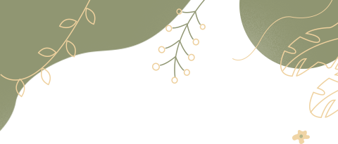
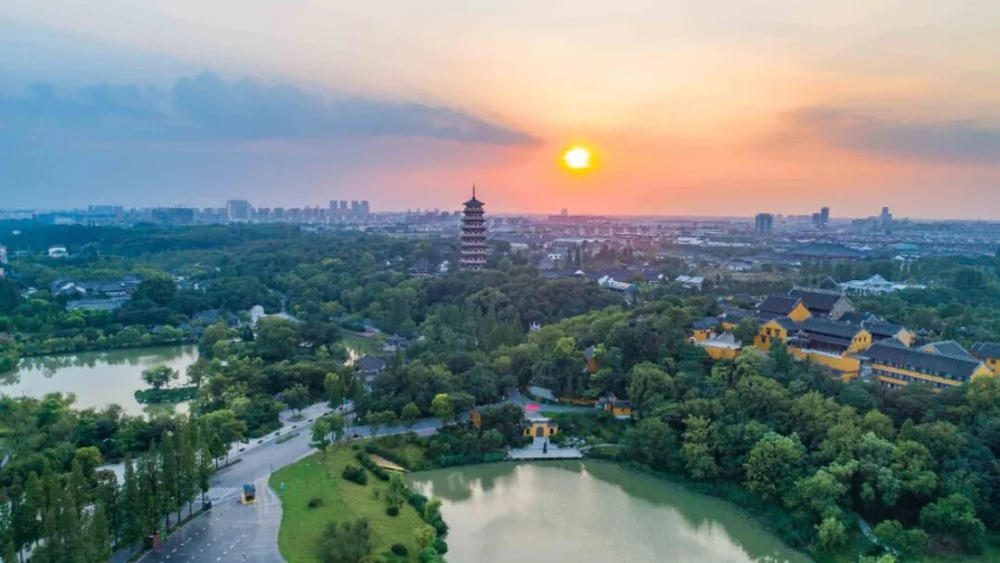
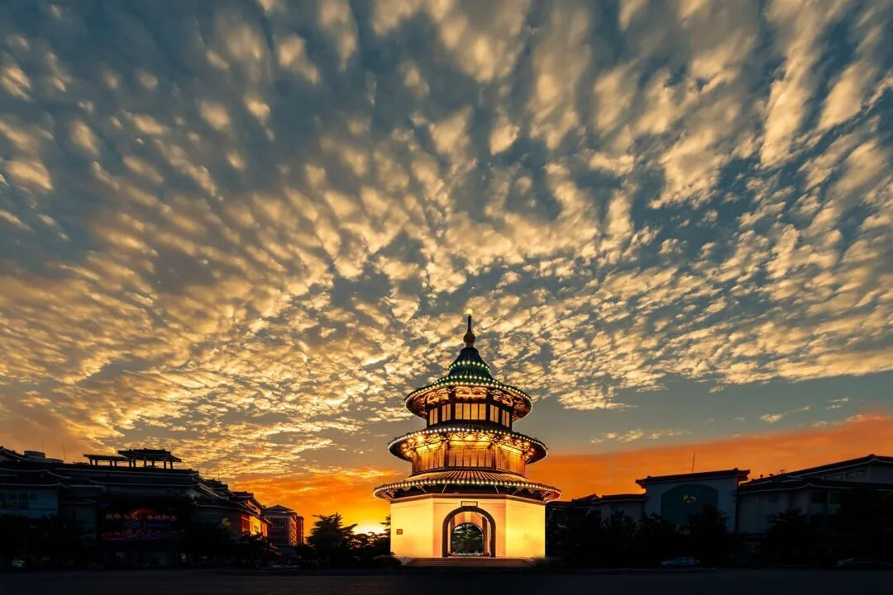
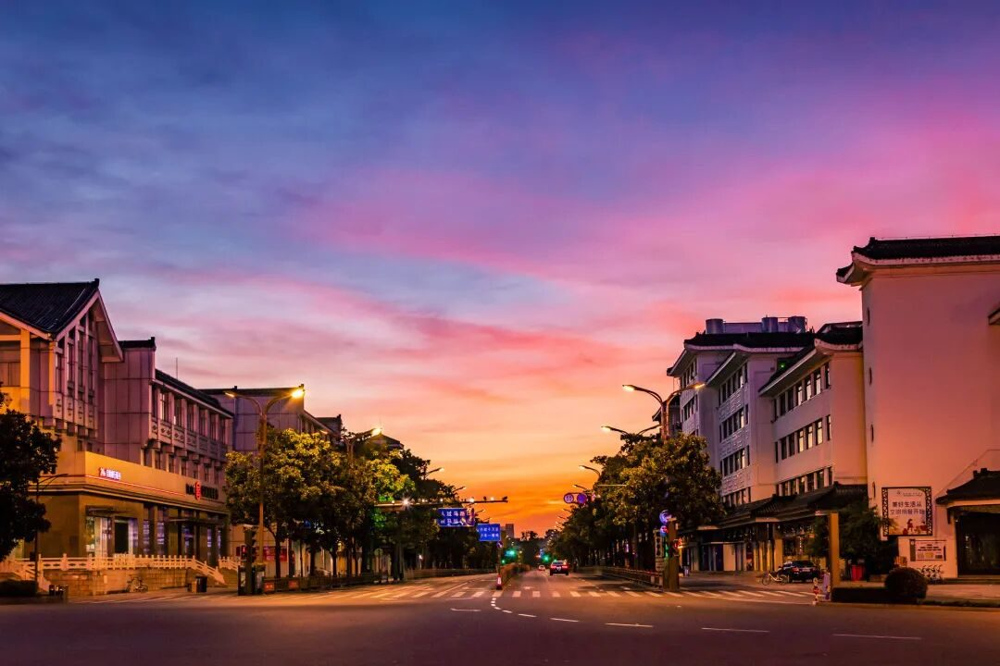
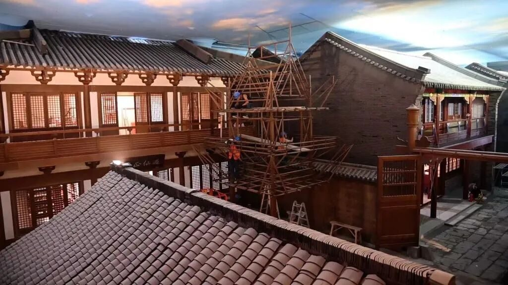
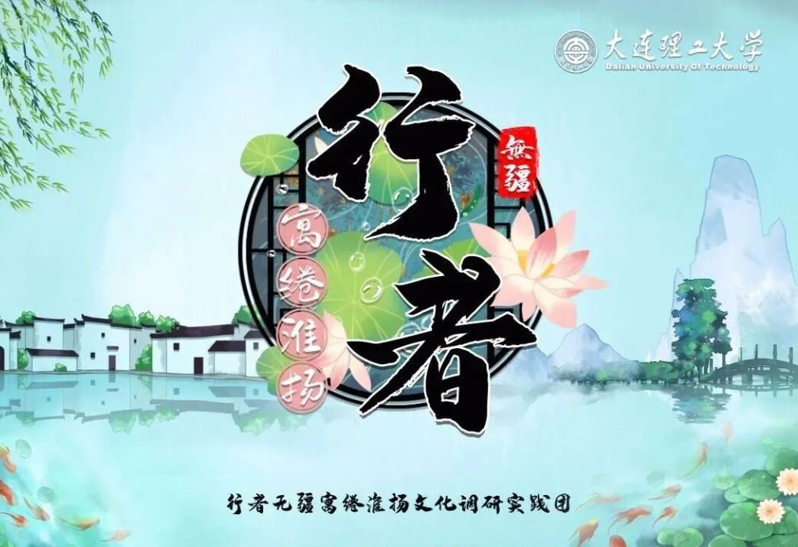

【徜扬恣肆·二】仙游四方，扬州梦好



乘风好去，长空万里，直下看山河。
知者行之始，行者知之成。行者予我来说是一个感知泥土的机会，文化的斑斓在脑海铺展，带着迷人的香气，吸引我们的灵魂去追逐，去触碰。世界并不是简单地用看、用观赏就可以了解的，它需要用听觉、嗅觉、触觉等感官去全方位感知。
我们有延绵的长城，磅礴奔腾的黄河，无尽的文化瑰宝，曾听闻行者无疆走过秦川巴渝，潇湘大漠，而今有幸遇见，与一群志趣相投的人共赴一场文化苦旅，去探寻这座千年古国下，深沉的黄土地上，悠长、俯仰的文化。

对于这份旅程，我有许多期待，想要深入扬州这座沐浴着海纳百川的运河文化同时拥抱着江南水乡婉约气质的小城，去感受、去探索其中的风土人情、寻常巷陌、柴米油盐。
遗憾的是疫情的再次发酵让我们与扬州的会面只得转为线上，但成员们的付出与支持让这次实践拥有了独特的意义，重新制定计划联系人员，选定课题侃侃而谈与虚心学习交流采访，从运河文化到自然景貌，手工艺术、古韵诗画再到食色烟火，山涧流水潺潺，柳词缠绵悱恻，茶草清香，烟波画船，扬州的美是一种刚柔并济的美，我们在扬州的灿烂文化里徜徉沉醉。正如南京文化学者薛冰所言：“但凡扬州其地、其人、其物、其事，其诗画歌吹、乡风节俗，大至一城，小至一砖，热如盐商，冷如瘦马，听他娓娓道来，莫不栩栩有神。”


谁知竹西路，歌吹是扬州。昔日繁华旖旎散去，而今春风几度，运河滋养着扬州，扬州也呵护着运河，在运河文化带上，如一颗颗明珠般的文物古迹，正擦拭掉尘埃，展露出璀璨光华，让千年文脉在扬州大地上延伸。

行者，行者，广漠中有生命的穿行，壮阔中有灵动的游走。愿有幸在流逝的时分秒的光影间用有限的脚步，踏过万里河山，行过千古须臾，沧海一瞬，听从回荡千年的音韵，窥见历史的遗藏。
千般荒凉，以此为梦。万里蹀躞，以此为归。